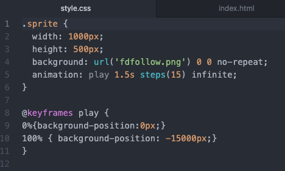
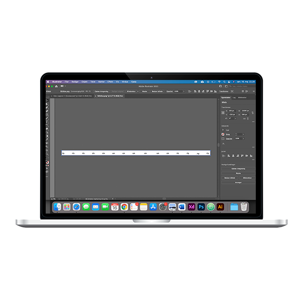

CSS
Animation
Animation - Logo
Jeg havde fået til opgave at lave en animation ved hjælp af CSS og Adobe illustrator. Jeg har taget udgangspunkt i et af de 12 principper for animation. Her valgte jeg Follow Through & overlapping.
Jeg valgte at tage udgangspunkt i et logo. Min tanke var at logoet skulle kunne benyttes på en hjemmeside, hvor det kom ind fra siden. I denne opgave har jeg benyttes mine kompetencer inden for CSS og Adobe illustrator.
Står du og mangler en med kompetencer inden for animation med CSS? Så klik på knappen under, og kontakt mig.
Kontakt

